是任意的。方程（95）称为中间积分。它的通解是（87）的解。如果（94）的另一方程能与（88）和（93）一起用，我们就得到另一函数
是任意的。方程（95）称为中间积分。它的通解是（87）的解。如果（94）的另一方程能与（88）和（93）一起用，我们就得到另一函数7．蒙日和非线性二阶方程
除了我们已经回顾过的二阶线性方程外，18世纪的数学家们还有需要考虑更一般的两个自变量的线性二阶方程，甚至非线性方程。例如，他们研究了线性方程
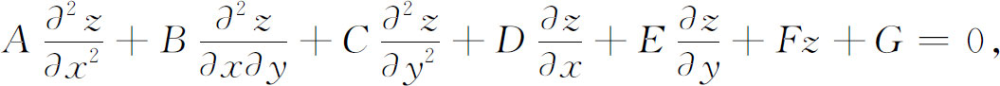
这里A，B，…，G是x和y的函数。这个方程通常写成
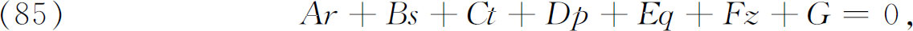
这里字母r，s，t，p和q有显然的意义。拉普拉斯在1773(47)年证明假如B2-4AC≠0，方程（85）就能经过变量替换化成如下形式：
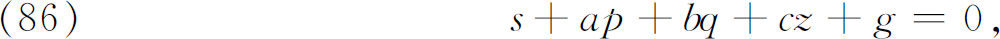
这里a，b，c和g是x和y的函数。然后他用无穷级数来解这个方程。
蒙日在他的《关于把分析应用于几何的活页论文》中，考察了非线性方程
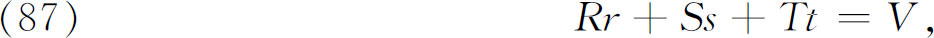
1其中R，S，T和V是x，y，z，p和q的函数，因而方程关于二阶导数r，s和t是线性的。在拉格朗日关于极小曲面（即由给定的空间曲线界住的面积最小的曲面）的工作中出现了这类方程，在那里具体的微分方程是
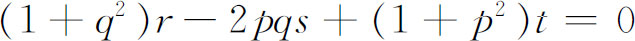
（也可见第24章第4节）。虽然蒙日对方程（87）曾经作了一些研究，但在现在的文章（1795）中，他才能够用我们将要扼要介绍的方法漂亮地解出它。利用下面这些直接的事实：
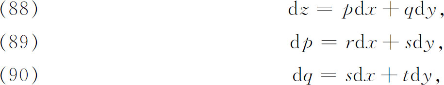
并从（87），（89）及（90）中消去r和t，他得到方程
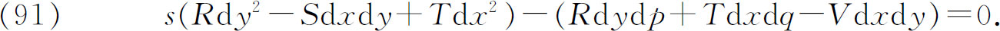
然后，他的论证是：每当可以联立地求解
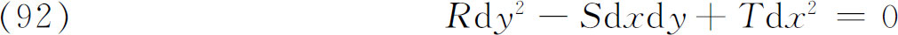
和
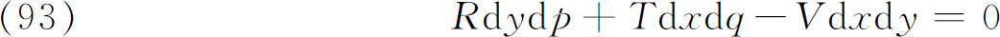
时，则（91）将被满足，从而（87）也将被满足。
方程（92）等价于两个一阶方程
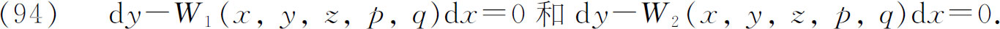
方程（88），（93）与（94）的任一个一起，组成五个变量x，y，z，p和q的三个全微分方程的方程组。这三个方程能解时，就可求得两个解
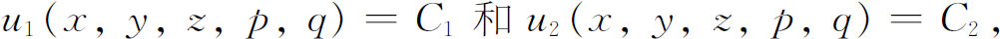
于是
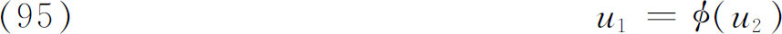
是一个一阶偏微分方程，其中是任意的。方程（95）称为中间积分。它的通解是（87）的解。如果（94）的另一方程能与（88）和（93）一起用，我们就得到另一函数
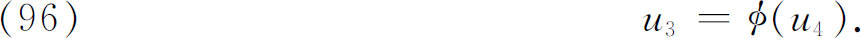
在这种情形（95）和（96）能联立地解出p和q，把这些值代入（88），那么这个全微分方程就能解出来。这至少是一个一般的格式，虽然还有很多细节我们未及详述。蒙日关于极小曲面方程的积分法是他为之自豪的成就之一。
对于方程（87），蒙日也引进了特征理论。特征的全微分方程是（92），即
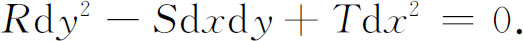
早在他的1784年的工作(48)中就出现了这个方程，它在积分曲面的每一点上定义该点的两个特征方向。积分曲面的每一点都有两条特征曲线通过，沿其中每一条都有两个相邻的积分曲面彼此相切。